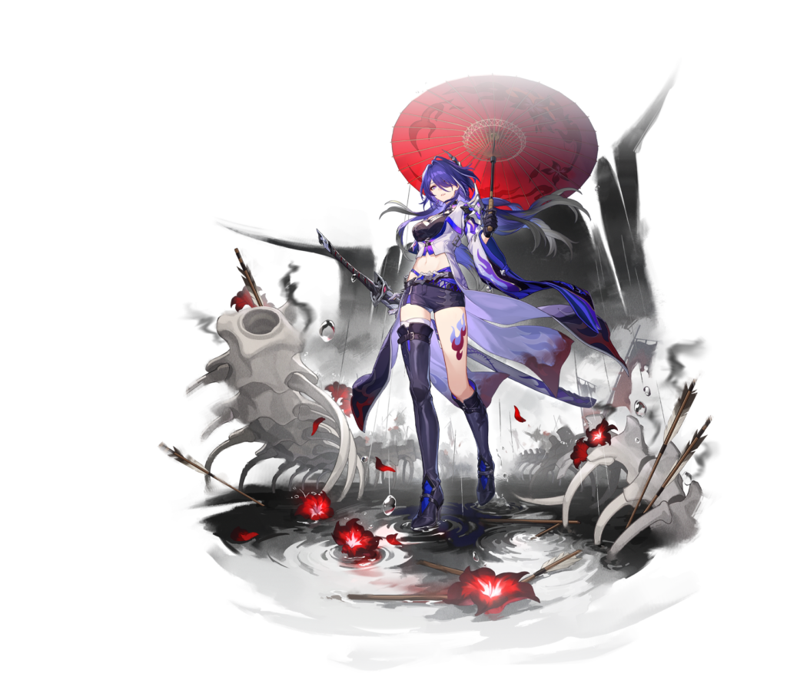

Acheron é uma personagem limitada de 5 estrelas, do elemento de Raio, que segue o caminho da Inexistência. Uma DPS focada em causar dano através de sua Perícia Suprema, com um kit totalmente ofensivo, que provê diversos bônus de dano. Ao contrário dos outros personagens voltados para DPS do jogo, Acheron possui uma sinergia muito maior com personagens do mesmo caminho que ela e com aqueles que aplicam efeitos negativos nos inimigos. Também conta com uma técnica que pode ser utilizada para derrotar grupos de inimigos, desde que não contenham chefes ou inimigos especiais, sem entrar em combate.
(todos os valores mostrados são equivalentes aos rastros nível 1, os valores entre [] representam os valores de nível máximo sem o 3° e 5° eidolon dela)
[ATQ Básico]
[Alvo Único]
Causa Dano de Raio igual a 50%[100%] do ATQ de Acheron a um único inimigo-alvo.


[Perícia]
[Explosão]
Ganha 1 ponto(s) de Sonho Retalhado.
Inflige 1 acúmulo(s) de Nó Rubro a um único inimigo-alvo e causa Dano de Raio igual 80%[160%] do ATQ de Acheron
a este alvo, assim como Dano de Raio igual a 30%[60%] do ATQ de Acheron a alvos adjacentes.


[Perícia Suprema]
[Área]
Utiliza sequencialmente Lâmina Pluvial 3 vezes e Ressurreição Estígia 1 vez, causando Dano de Raio até 223%[372%] do ATQ de Acheron a um único inimigo-alvo, e causa Dano de Raio até de 180%[300%] do ATQ de Acheron a todos os outros inimigos.
Lâmina Pluvial: Causa Dano de Raio igual a 14,4%[24%] do ATQ de Acheron a um único inimigo-alvo e remove até 3 acúmulos de Nó Rubro do alvo.
Quando o Nó Rubro é removido, imediatamente causa Dano de Raio igual a 9%[15%] do ATQ de Acheron a todos os inimigos.
Para cada acúmulo de Nó Rubro removido, o Multiplicador de Dano desta aplicação de Dano é adicionalmente aumentado, até um aumento de 36%[60%].
Ressurreição Estígia 1 vez: Causa Dano de Raio igual a 72%[120%] do ATQ de Acheron a todos os inimigos e remove todos os Nó Rubros.
Nó Rubros não podem ser aplicados a inimigos durante a Perícia Suprema.


[Técnica]
Imediatamente ataca o inimigo.
No início de cada onda, ganha Ascendência Quadrivalente, causando Dano de Raio igual a 200% do ATQ de Acheron a todos os inimigos e reduzindo a Tenacidade te todos os inimigos independentemente dos Tipos de Fraqueza.
Ao infligir Quebra de Fraqueza, aciona o efeito de Quebra de Fraqueza de Raio.
Ascendência Quadrivalente: depois de usar sua Perícia Suprema, Acheron ganha 1 ponto(s) de Sonho Retalhado e inflige 1 acúmulo(s) de Nó Rubro em um único inimigo aleatório.
Se o ataque for realizado contra um inimigo normal, ele é derrotado imediatamente sem entrar em combate.
Nenhum Ponto de Técnica será consumido caso nenhum inimigo seja atingido.


[Talento]
[Aprimoramento]
Quando Sonho Retalhado chega a 9 ponto(s), a Perícia Suprema pode ser utilizada.
Durante a Perícia Suprema, reduz a Tenacidade dos inimigos independentemente dos Tipos de Fraquezas e reduz a RES a Todos os Tipos de todos os inimigos em 10%[20%], durando até o final da Perícia Suprema.
Quando qualquer unidade inflige penalidades a um inimigo-alvo enquanto usa sua habilidade, Acheron ganha 1 ponto de Sonho Retalhado e inflige 1 acúmulo de Nó Rubro no alvo.
Se a habilidade utilizada infligir penalidade a múltiplos inimigos, então um acúmulo de Nó Rubro será infligido no inimigo-alvo com o maior número de acúmulos de Nó Rubro. Este efeito pode ser acionado até 1 vez por uso da habilidade.
Quando Acheron está no campo de batalha e após um inimigo-alvo sair do campo de batalha ou ser derrotado por qualquer unidade, seus acúmulos de Nó Rubro serão redirecionados ao inimigo-alvo com o maior número de acúmulos de Nó Rubro em campo.
Quando existirem 1 ou 2 personagens seguindo o Caminho da Inexistência na equipe além de Acheron, aumenta o Dano do ATQ Básico, da Perícia e da Perícia Suprema de Acheron em 115% ou 160% do Dano original respectivamente.
No início da batalha, ganha imediatamente 5 ponto(s) de Sonho Retalhado e aplica 5 acúmulo(s) de Nó Rubro em um inimigo aleatório.
Quando o Sonho Retalhado alcançar seu maior limite, para cada ponto de Sonho Retalhado que exceder o limite, ganha 1 acúmulo de Ascendência Quadrivalente.
Aumenta a contagem de acúmulos máximos da Ascendência Quadrivalente para 3.
Quando a Lâmina Pluvial da Perícia Suprema de Acheron atinge os inimigos-alvo com Nó Rubro, seu Dano aumenta em 30%, acumulando até um máximo de 3 acúmulo(s) e durando por 3 rodada(s).
Também causa Dano adicionalmente 6 vez(es) quando a Ressurreição Estígia é acionada.
Cada golpe causa Dano de Raio igual a 25% do ATQ de Acheron a um único inimigo-alvo aleatório e é considerado como Dano de Perícia Suprema.
Além dos rastros principais acima, ela possui mais 10 que aumentam os seus stats, sendo:
5 Bônus de Ataque: 4%, 4%, 6%, 6% e 8% (28%).
2 Bônus de Dano: Raio: 3,2% e 4,8% (8%).
3 Bônus de Dano Crítico: 5,3%, 8% e 10,7% (24%).
Aumenta a Chance de CRIT em 18% ao causar Dano a inimigos penalizados.
O número de personagens no Caminho da Inexistência necessário para alcançar o maior efeito possível do Rastro "O Abismo" é reduzido por 1. No início da rodada desta unidade, ganha 1 ponto de Sonho Retalhado e inflige 1 acúmulo de Nó Rubro a um inimigo com mais acúmulos de Nó Rubro.
Nv. da Perícia Suprema +2, até no máximo Nv. 15. Nv. do ATQ Básico +1, até no máximo Nv. 10.
Quando o inimigo-alvo entra em combate, inflige a ele o estado de Vulnerabilidade Vulnerável do Dano da Perícia Suprema, aumentando a quantidade de Dano da Perícia Suprema recebido em 8%.
Nv. da Perícia +2, até no máximo Nv. 15. Nv. do Talento +2, até no máximo Nv. 15.
Aumenta a Pen de RES a Todos os Tipos do Dano de Perícia Suprema causado por Acheron em 20%. O Dano causado pelo ATQ Básico e a Perícia também será considerado Dano de Perícia Suprema e não pode reduzir a Tenacidade do inimigo independentemente dos Tipos de Fraqueza. Quando a Fraqueza é Quebrada, aciona o efeito de Quebra de Fraqueza de Raio.
Infelizmente Acheron carece de cones de luz "free-to-play friendly", além de uma diferença significativa de seu Cone de Assinatura para todas as outras opções. Mesmo nível 1, ele oferece um valor considerável de Dano CRIT e um debuff extra toda vez que o personagem ataca, aqueles afetados por ele recem 24% a mais e o dano da Perícia Suprema aumenta em outros 24%. Sem contar o aumento altos dos stats base que ele possui por ser um cone 5 Estrelas.
5 Estrelas
Obtido em banner de tempo Limitado.

Aumenta o Dano causado pelo usuário em 24%. Após cada ataque desferido pelo usuário, sua VEL aumenta em 4.8%, acumulando até 3 vezes. Se o usuário atingir um inimigo-alvo que não esteja afetado por Erosão, há uma chance-base de 100% de infligir Erosão ao alvo. Inimigos afetados por Erosão também são considerados como se estivessem em estado de Choque e receberão Dano de Raio Contínuo no início de cada rodada igual a 60% do ATQ do usuário, durando por 1 rodada(s).
5 Estrelas
Obtido em banner de tempo Limitado.

Aumenta em 24% o Dano contra inimigos penalizados. Quando o usuário utiliza sua Perícia, a Taxa de Acerto de Efeito desse ataque aumenta em 18% e seu ATQ aumenta em 24%.
5 Estrelas
Obtido em banner.

Aumenta em 16% o Efeito de Quebra do usuário e aumenta o Dano que ele causa a inimigos sob o stats de Choque ou Cisalhamento de Vento em 16%. Também se aplica a Dano Contínuo.
4 Estrelas
Obtido na Loja do Espelho.
Por último, mesmo não sendo totalmente "free-to-play", Boa Noite e Durma Bem é a uma escolha muito boa comparavél com outros 5 estrelas, sendo mais acessivel por ser 4 estrelas, principalmente se conseguir nível máximo nele, além de fornecer aumento de dano em si e não % de ataque.

Para cada penalidade do inimigo-alvo, aumenta em 12%[24%] o Dano causado pelo usuário, podendo acumular até 3 vez(es). O efeito também se aplica ao Dano Contínuo.
4 Estrelas
Obtido em banner.
Acheron possui uma boa variedade de escolhes consideradas boas, permitindo que você possa utilizar aqueles com melhores sub-stats até obter algum do seu melhor set.
Aumenta em 12% o Dano causado a inimigos com penalidades
Aumenta a Chance de Crit em 4%. O usuário causa 8%/12% de Dano CRIT aumentado em inimigos com pelo menos 2/3 penalidades. Após o usuário infligir uma penalidade nos inimigos-alvo, os efeitos mencionados anteriormente aumentam em 100%, durando por 1 rodada(s).
Defitivamente a melhor escolha em termos de stats, fornecendo bônus de Dano além de uma quantia decente de Dano e Chance de CRIT.

Aumenta o Dano de Raio em 10%.
Quando o usuário usa a Perícia, aumenta o ATQ em 20% por 1 rodada(s).
Uma escolha padrão para uma build de dano, fonnecendo uma quantia decente de bônus, pórem nada de mais.

Aumenta o Dano Quântico em 10%.
Quando o usuário causa Dano ao inimigo-alvo, ignora 10% de DEF. Se o inimigo-alvo tiver Fraqueza contra Quântico, o usuário ignora adicionalmente 10% de DEF.
Considerada uma das melhores escolhas para qualquer DPS por ignorar parte da defesa do inimigo. Infelizmente esse set pode perder o seu valor caso Acheron seja usada com debuffers como Silver Wolf e Pela. Ambas fornecem uma grande quantia de redução de defesa, podendo até mesmo ultrassar 100% de redução.
Aumenta o ATQ do usuário em 12%. Ao entrar em batalha, se ao menos um outro aliado seguir o mesmo Caminho que o usuário, a Chance de CRIT do usuário aumenta em 12%.
A melhor opção, com uma bom aumento de Ataque e Chance de CRIT, além de que o próprio kit da Acheron conta com a presença de outros personagens do mesmo caminho.
Aumenta em 8% a Chance de CRIT do usuário. Quando a Chance de CRIT atual chegar a 50% ou mais, aumenta em 15% o Dano de Ataque Extra e da Perícia Suprema do usuário.
Quase em pé de igualdade com o Izumo, fornece uma quantia decente de stats e um bônus de dano na Perícia Suprema.
Aumenta o ATQ do usuário em 12%. Quando a VEL é igual ou maior a 135/160, o usuário causa 12%/18% a mais de Dano.
Apenas viável se estiver com ao menos 135 de Velocidade, algo que pode não ser tão facíl, visto que Archeron não tem a necessidade de agir toda hora por conta de sua Perícia Suprema ser carregada na ação dos outros personagens.
Aumenta a Chance de CRIT do usuário em 4%. Quando um inimigo-alvo é derrotado, o Dano CRIT do usuário aumenta em 4%, acumulando até 10 vez(es).
Uma menção honrosa, em conteúdos com múltiplas ondas de inimigos gera até 40% de Dano CRIT extra.
Acheron possui uma dinâmica diferente dos outros personages voltados para dano, possuindo uma sinergia com personages do próprio caminho e/ou que apliquem debuffs. Em uma situação normal com uma Acheron E0, para tirar maior proveito de seu kit será utilizado dois personagens da Inexistência , entre as escolhas, duas das melhores são:
4 Estrelas
Possui uma boa redução de defesa em sua Perícia Suprema contra todos os inimigos e uma recarga de energia alta. Para maior proveito é recomendado utilizar do Cone de Luz [A Determinação Brilha Como Gotas de Suor] que permite causar 'Enredamento' a um inimigo que ainda não possua esse mesmo debuff atráves do ataque seu ataque basico, ajudanto com a Perícia Suprema da Acheron e gerando Skill Points.


5 Estrelas
Uma personagem de Banner Limitado que possui debuffs em todos os seus ataque, além de uma grande redução de defesa na sua Perícias Suprema.

Entre outras opções desse caminho, estão:
5-Estrelas 4-Estrelas 4-Estrelas


Caso possua o 2° Eidolon da Acheron, que reduz a necessidade de 2 para apenas 1 personagem de Inexistência no mesmo time, pode ser utilizada algum suporte que forneça bônus o suficiente para cobrir a falta da aplicação de debuff do personagem que ele está substituindo.
5 Estrelas
Fornece uma aumento no efeito de quebra e dano na Perícia, além de sua Perícia Suprema manter os inimigos em quebra de fraqueza por mais um turno.

5 Estrelas
Fornece um aumento de Ataque bom em sua Perícia que avança a ação do aliado para agir imediatamente e outro aumento de Ataque e Dano CRIT de todos os aliados.

O último lugar é reservado para um suporte especializado em cura, no caso da Acheron, personagens que atraem os golpes inimigos para si são especialmente eficazes, podendo tirar proveito do Cone de Luz [Tendência do Mercado Universal].

Quando um inimgo atinge o personagem o utilizando, ele é aflingido por um debuff que conta para a Perícia Suprema da Acheron. Entre as opções disponíveis, três tem destaque:
5 Estrelas
Embora não possua nada para atrair os ataques, sua Perícia gera um campo que reduz o dano recebido pelos aliados e aumenta sua Chance de CRIT, além de cura em sua Perícia Suprema.

5 Estrelas
Focado especialmente em gerar escudo, desde que possua energia suficiente para manter sua Perícia Suprema sempre ativa, também possui um debuff em sua Perícia.

5 Estrelas
Precisa de um cuidado maior na hora de montar sua build, tornando mais complicada de se usar, porém fornece um pequeno escudo em todas as suas ações, além de redução de dano em sua Perícia, que também aplica um debuff de 'Provocado', aos inimigos, forçando eles a ataca-lá.